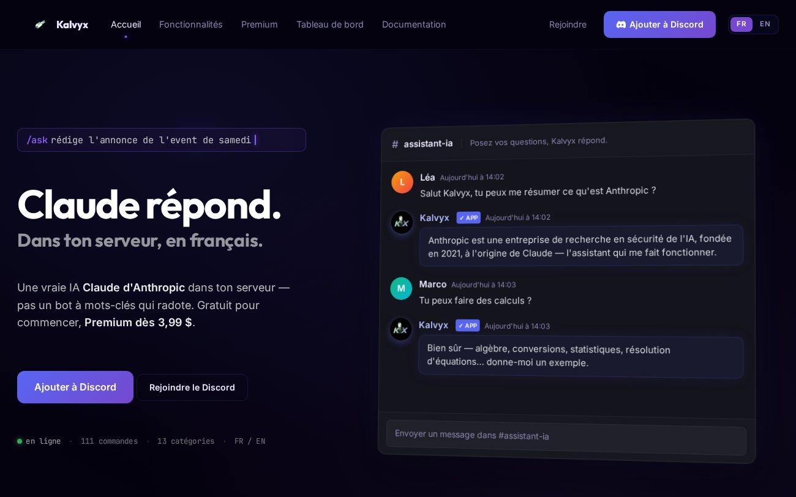

Bot Discord · IAEn ligne
Kalvyx
Un bot Discord tout-en-un, propulsé par Claude (Anthropic) : une vraie IA en français dans ton serveur, plus modération, niveaux, tickets… avec son site et son tableau de bord. En prod, tous les jours.
- Propulsé par Claude
- Site + dashboard
- FR / EN